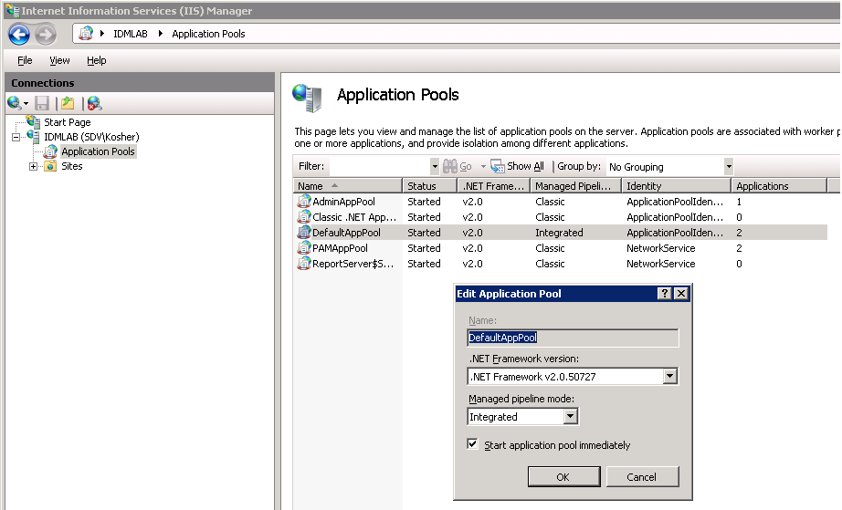
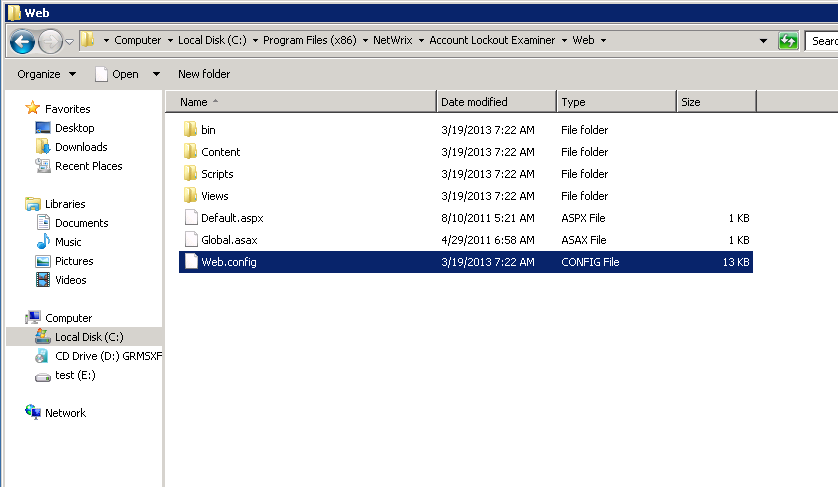
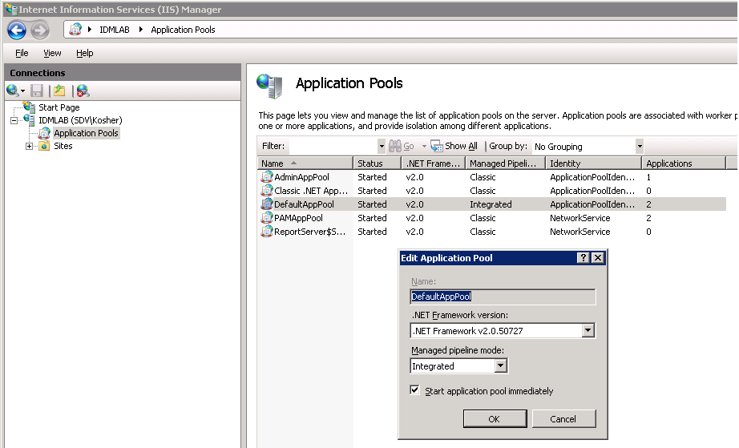
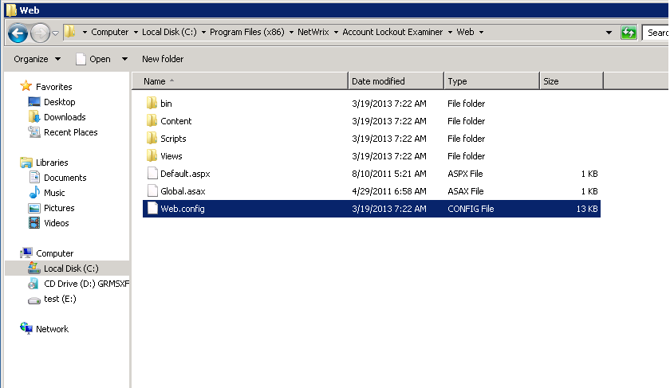

After installation of help desk portal I get the IIS error: "There is a duplicate
'system.web.extensions/scripting/scriptResourceHandler' section defined.
The error occurs because <system.web.extensions> sections are defined in both site-level and application level web.configs. This can happen with applications developed for ASP.NET 2.0 when ASP.NET 4.0 is set as default.
Please, go to IIS manager, in the left pane select Application pools, make sure that DefaultAppPool uses ASP.NET 2.0 (.NET Framework column in the central pane)  The workaround for the this is to delete or comment out all the <system.web.extensions> configuration section definitions and configuration section group definitions from the application-level Web.config file. It is located in the Web foler in the Account Lockout Examiner installation directory. 
The error occurs because <system.web.extensions> sections are defined in both site-level and application level web.configs. This can happen with applications developed for ASP.NET 2.0 when ASP.NET 4.0 is set as default.
Please, go to IIS manager, in the left pane select Application pools, make sure that DefaultAppPool uses ASP.NET 2.0 (.NET Framework column in the central pane)  The workaround for the this is to delete or comment out all the <system.web.extensions> configuration section definitions and configuration section group definitions from the application-level Web.config file. It is located in the Web foler in the Account Lockout Examiner installation directory. 